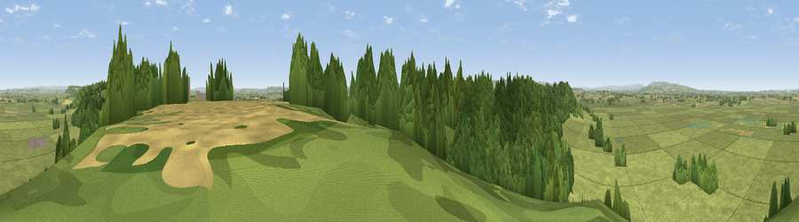

Viewpoint near Fivehead
#11756 in England · top 29% of its area beats it · near FiveheadWhere it is
The exact computed spot (ST 36875 24425). Click the marker for map links.
The view, rendered

A 360° render of this exact spot computed from the terrain model, tree cover and land cover — summer colours, afternoon light, calibrated against photographs of famous viewpoints. Real trees, hedges and buildings will differ in detail.
The panorama
Grey silhouette: terrain skyline in each direction (720 bearings, Earth curvature and refraction included). Dashed green: skyline with trees (+15 m) and buildings (+8 m) as obstacles. Blue strip: how far the ground is visible on each bearing.
Where the view opens
Wedge length = distance to the farthest visible ground on that bearing (vegetation-aware). Rings at 10, 25 and 50 km.
What fills the view
60% grassland · 33% woodland · 6% cropland
Angular shares of the visible panorama (visual magnitude), not map area. Landscape diversity 0.38 (0–1 Shannon).
Key numbers
More beautiful places nearby
The staircase of upgrades: each row has a higher view potential than everything closer. Driving times are estimates from straight-line distance, calibrated against real road routing — check an actual route before setting out.
| Place | Direction | Drive | Score |
|---|---|---|---|
| Viewpoint near Fivehead | WSW · 1 km | ~2 min | 63.2 |
| Viewpoint near Fivehead | WSW · 2 km | ~5 min | 63.7 |
| Viewpoint near Curry Mallet | WSW · 4 km | ~9 min | 68.0 |
| Viewpoint near North Petherton | NW · 12 km | ~23 min | 71.2 |
| Viewpoint near Buckland St. Mary | SW · 12 km | ~23 min | 72.2 |
| Viewpoint near Buckland St. Mary | SW · 13 km | ~24 min | 77.3 |
| Viewpoint near Hewish | SSE · 15 km | ~26 min | 78.5 |
| Cothelstone Hill | WNW · 20 km | ~33 min | 82.1 |
51.01572, -2.90127 · source: screening · position refined by local search. Computed location — check access rights before visiting.